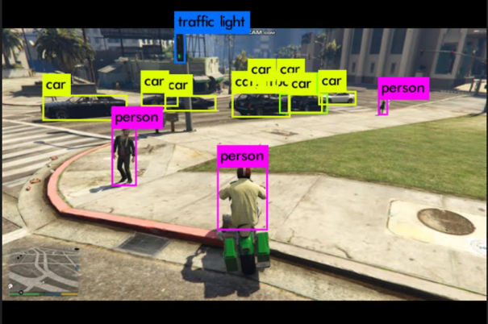

Input spikes flow through an RRAM crossbar; each output neuron integrates charge until its membrane potential crosses threshold — then it fires. Click the canvas to stimulate.
SNN-based compute-in-memory architecture for energy-efficient neuromorphic computing.
PSpice-based SNN neuron circuit simulation for accurate synaptic behavior modeling.
RRAM-based synaptic circuit fabrication for low-power AI acceleration.
SNNCompute-In-MemoryRRAMNeuromorphic
BRANCH_2
Autonomous Driving
→ FOCUS-AUTO└─ perception, validated before the road
2020 · DIGITAL TWIN
Autonomous Vehicle Simulation with GTA5

LIVE DEMO
A miniature version of the pipeline: Canny-style lane detection plus YOLO-style bounding boxes running over a moving road scene.
Digital-twin simulation for autonomous driving using the GTA5 game engine.
Real-time object detection and avoidance with OpenCV, YOLOv4, and TensorFlow.
Lane detection and tracking using Canny edge detection for vehicle navigation.